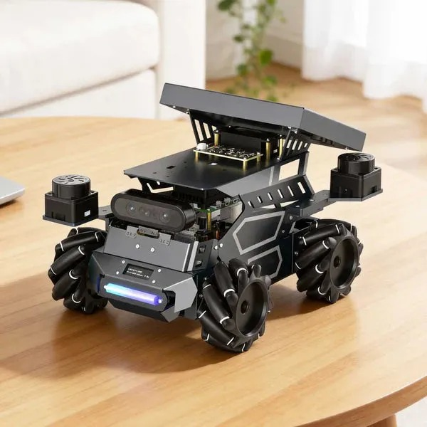

DWB Controller
A classical Nav2 local controller based on the Dynamic Window Approach. It generates velocity commands by evaluating possible robot motions using critic functions.

ROSMASTER M3 · ROS 2 · Nav2 · IsaacLab · Reinforcement Learning
Given a goal, the robot should avoid fast-moving obstacles and reach the goal safely.
NavRL Bench trains a reinforcement-learning-based local controller from scratch in IsaacLab / Isaac Sim and compares the trained policy against classical Nav2 controllers such as DWB, MPPI, and RPP under controlled dynamic-obstacle scenarios.
Project Overview
NavRL Bench is a robotics project focused on goal-directed navigation in dynamic environments.
The project trains an RL-based local controller from scratch using IsaacLab / Isaac Sim. The trained policy is then integrated into a ROSMASTER M3 navigation pipeline and compared against classical Nav2 local controllers including DWB, MPPI, and RPP.
Problem Statement
Classical Nav2 controllers are reliable and widely used for mobile robot navigation. However, when fast-moving obstacles repeatedly cross the robot path, they can become conservative, stop frequently, or struggle to maintain smooth progress toward the goal.
This project investigates whether a reinforcement-learning-based local controller trained from scratch can learn more adaptive dynamic-obstacle avoidance behavior while still reaching the assigned goal safely.
Project Pipeline
Dedicated RL Training Work
The RL part of this project includes environment design, observation design, action design, reward shaping, PPO training, policy export, and deployment into the Nav2 local control pipeline.
A separate training page documents this pipeline clearly so the project does not look like only a comparison between existing controllers.
Controllers Compared
A classical Nav2 local controller based on the Dynamic Window Approach. It generates velocity commands by evaluating possible robot motions using critic functions.
A predictive sampling-based controller that evaluates multiple candidate trajectories and selects the best control action based on cost.
A path tracking controller that follows the global path while regulating speed based on curvature and collision constraints.
A reinforcement learning based local controller trained from scratch in IsaacLab / Isaac Sim and integrated into the navigation pipeline.
Nav2 Integration
The global planner remains unchanged. This keeps the benchmark focused on local navigation behavior such as obstacle avoidance, slowing down, choosing local detours, and recovering from temporary blockages.
The RL policy replaces only the local controller block, allowing it to be directly compared with classical Nav2 local controllers.
Benchmark Scenarios
A moving obstacle crosses the robot's path at higher speed while the robot attempts to reach the goal.
A moving obstacle briefly blocks the route, forcing the robot to slow down, wait, or locally avoid.
The robot must reach the assigned goal while reacting to moving obstacles along the route.
A baseline scenario to verify normal local navigation behavior around fixed obstacles.
The robot navigates through a narrow passage where local control decisions are important.
Each controller is tested multiple times under the same scenario setup for fair comparison.
Evaluation Metrics
Benchmark Principle
Classical controllers are used as available Nav2 baselines. RL policies are trained from scratch by this project and then evaluated under the same test setup.
The project does not assume that RL will always perform better. The goal is to measure where classical control performs well, where it struggles, and whether the trained RL policy provides better adaptability in fast-moving dynamic-obstacle scenarios.
Results
| Controller / Policy | Type | Training Required | Output | Success Rate | Stops | Collisions |
|---|---|---|---|---|---|---|
| DWB | Classical | No | /cmd_vel | - | - | - |
| MPPI | Classical | No | /cmd_vel | - | - | - |
| Regulated Pure Pursuit | Classical | No | /cmd_vel | - | - | - |
| PPO RL Policy | Learned | Yes | /cmd_vel | - | - | - |
Benchmark results, plots, and demo videos will be added after controlled experiments are completed.
Tech Stack